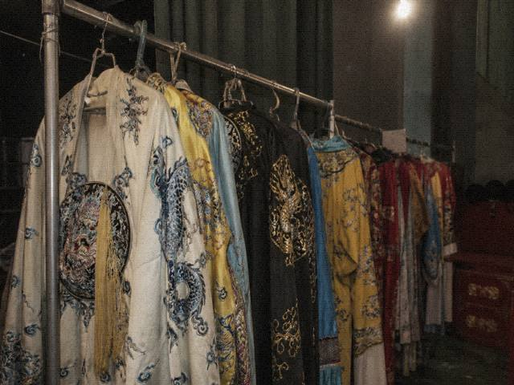

槐溪茶馆停更。镜像只读。禁止发中邪、驱邪、寻人。班规讨论保留。斑竹不修帖。
外链只留文旅和剧团。文化馆文献站能进。票务后台随他们开不开。
站务。斑竹〇八年写过一版，一二年停更时又写过一版。两版叠在一起，叠得不像规章，像留条。县里网警那年打来的电话，他没往版上贴原文，只留下禁发的三类。
槐溪茶馆停更。镜像只读。禁止发中邪、驱邪、寻人。班规讨论保留。斑竹不修帖。不修的意思是错字也不改，楼层乱了也不排。外链只留文旅和剧团。文化馆文献站能进。票务后台随他们开不开，开不开不归茶馆管。一〇年那次电话以后，版块名改过，改过就别改回去。改回去容易又来电话。来电话斑竹现在接不到，人在广州打瓷砖，手机是工地那个号，工地那个号不聊站务。有人要恢复发帖，恢复不了。虚拟主机控制台密码在一个练习本上，练习本在桐县老家抽屉，抽屉钥匙他弟拿着，他弟不碰电脑。积分、头衔、签名档，一〇年卸过一轮，卸过的不要问怎么开。开了也没人看。看龙套去夜戏见闻。看号去马句那帖。看吃的去老张。别在站务帖里报案。案去派出所。派出所不管戏票。不管应工。不管开锣。本站不是金盾那种备案站，备案那年材料交过一半，一半黄了。黄了也别写进帖子。写了斑竹还得删。他懒得删。控制台密码写在施工队考勤本封皮背面，封皮油，油了字发花。发花也还是那一串。一串不往站务帖里贴。贴了等于把馆子交给别人。交给别人他不干。不干就只读。